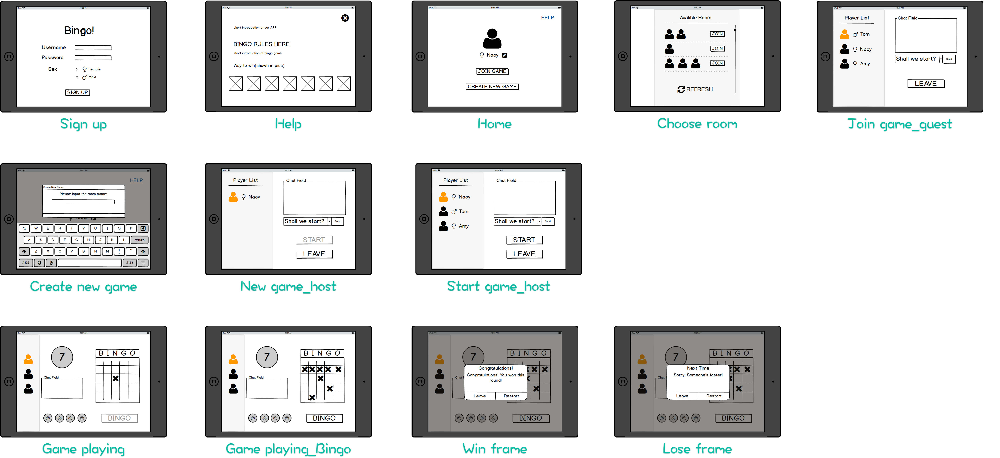

Time
Oct.2016 - Feb. 2017
In this project our group has the aim to create an android-application, which suppose to reconnect elderly people to the society and give them the possibility to do that with the fun factor. To make the access easier and increase the acceptance, we take out any kind of seriousness and choose a game. And because of the degree of familiarity among the elderly, we chose Bingo that can be played with family, friends and even complete strangers to help them meet new people through this game and have fun while playing.
Oct.2016 - Feb. 2017
Berlin, Germany
UI&UX Design
Since the improvements in medicine and healthcare, the age of population in the world is getting older and older. By 2020 more 25% of european population will be aged above 60 and out of those majority will be aged more than 75. This demographic change grows the society of the elderly and generates or increase problems we have to face. One of these problems is that more and more seniors lost connection to the rest of the world and live in loneliness and isolation. Some reasons could be the death of the partner, far away livness of family and friends or the loss of the ability to leave the home or even worse, the bed. The loss of the connection to the community has negative impact on psychical and physical condition of these persons. We want to help those people to find a way back to the community with the use of technology and let them regain some piece of quality of life.
First of all, we cannot solve the isolation problem of the elderly with an application, but we can increase the quality of somebody’s life. To achieve this we chose to design an application to reconnect the elderly to the society.We chose a game for several reasons:
To fulfill the requirements our bingoapp offer several use-cases:
According to the use cases we defined in this application, we basically decided how is the information architecture of this tablet app looks like.

Based on the information architecture, we had agreement on the basic functionality in MVP of this game tablet app, here is our wireframe.
After the UI design and structure define, the overview of interaction flow shows as below:
For this Study participates 30 (25 male, 5 female) people between the age of 18 and 30. Even though that technically elderly people are needed for this investigation, mostly students where chosen because of a lack of funds and time. The test process shows below:
 There are two charts simply explained the results of this study. The first and second chart shown all non-significant dimensions and significant dimensions respectively.
The last chart the relative improvement in percentage of the significant dimensions. Negative values are a decrease and positive values a increase compared to the first round.
There are two charts simply explained the results of this study. The first and second chart shown all non-significant dimensions and significant dimensions respectively.
The last chart the relative improvement in percentage of the significant dimensions. Negative values are a decrease and positive values a increase compared to the first round.

The goal was to reduce the isolation and loneliness of elderly people and here is an prototype that should helping to address this problem. Even in this early state of development the study shows an improvement in social bounding which will probably increase when future work is realized.
It is shown how effective notifications about the progress compared with a limited number of chat massages can be to enhance social bonds. The Bingo prototype is on a good way to be an effective tool fighting against isolation among the elderly and probably be able to have a big impact on those people.